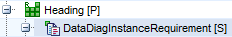

CANdelaStudio Requirements View
CANdelaStudio Requirements View
You can use CANdelaStudio to describe requirements for an ECU.

Requirements Workflow DOORS - Converter / PREEvision / .csv / CANdelaStudio Requirements / Diagnostic Objects
In a CANdela document, diagnostic objects describe the diagnostic behaviour of an ECU (e.g. ECU, variant, service, data object, data type).
Besides the diagnostic objects, a CANdela document contains a requirements pool. The requirements can be...
In order to exchange requirements with other tools like Rational DOORS or Vector PREEvision, CANdelaStudio...
In Rational DOORS, requirement properties can be configured freely (with flexibility like in Microsoft Excel). Therefore you cannot export a .csv file from DOORS and import it directly in CANdelaStudio - CANdelaStudio does not know your DOORS conventions. A converter is required to adapt the data
This can be done in both directions.
Vector is ready to assist you on a service project basis in converting between the CANdelaStudio exchange format and the specific formats of a third-party tool.

Screenshot Showing different Types of Requirements
CANdelaStudio supports different types of requirements:
Typed requirements cover
but not services and data types.